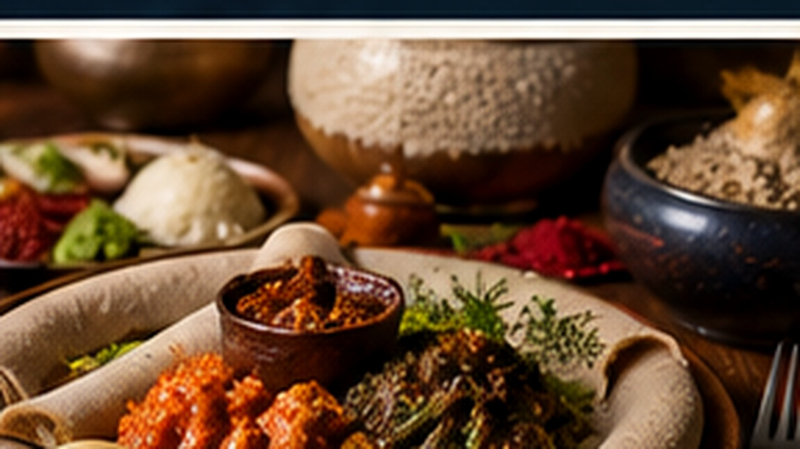

01
Injera kennenlernen
Das typische Sauerteigfladenbrot bildet die Grundlage vieler gemeinsamer Mahlzeiten.
Äthiopiens Küche ist ein wichtiger Teil der Reise. Injera, Gewürze, Fastengerichte und die Kaffeezeremonie verbinden Geschmack mit Kultur.

Übersichtlich, praktisch und auf die Reisevorbereitung ausgerichtet.
Das typische Sauerteigfladenbrot bildet die Grundlage vieler gemeinsamer Mahlzeiten.
Fastenzeiten bringen vielerorts eine große Auswahl pflanzlicher Gerichte mit sich.
Unterwegs auf eine sichere Trinkwasserversorgung achten.
Kaffee ist weit mehr als ein Getränk und häufig Teil einer sozialen Zeremonie.
Äthiopiens Küche ist ein wichtiger Teil der Reise. Injera, Gewürze, Fastengerichte und die Kaffeezeremonie verbinden Geschmack mit Kultur.
Ein sinnvoller Ablauf hilft, wichtige Punkte rechtzeitig zu erledigen.
Ernährungsform und Unverträglichkeiten in die Planung aufnehmen.
Lokale Küche offen, aber mit persönlichem Wohlbefinden im Blick ausprobieren.
Besonders bei Wärme und Höhe regelmäßig Flüssigkeit aufnehmen.
Gerne berücksichtigen wir lokale Restaurants, Kaffeezeremonien und besondere Ernährungswünsche in Ihrer Route.